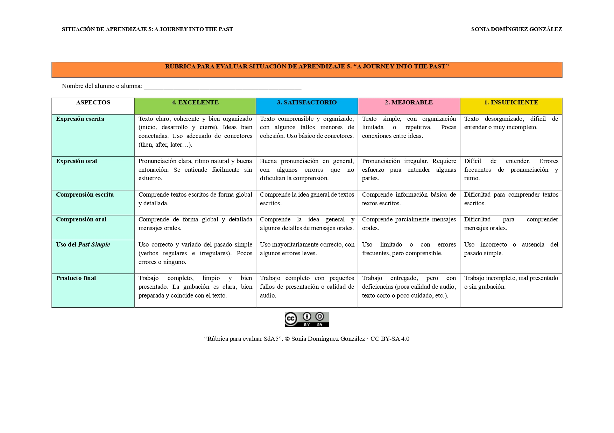
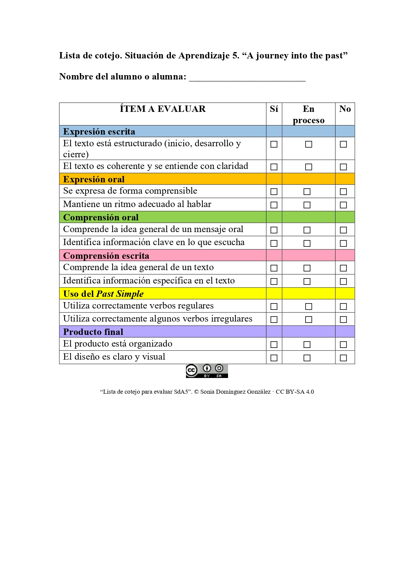

INSTRUMENTOS DE EVALUACIÓN
Para evaluar la Situación de Aprendizaje 5: “A journey into the past” he elegido dos instrumentos de evaluación. Una rúbrica y una lista de cotejo. Ambos instrumentos me permiten llevar a cabo una evaluación continua, formativa y sumativa del alumnado, facilitando la recogida de información relevante sobre su proceso de aprendizaje, más allá de la mera calificación final.
RÚBRICA
La rúbrica la utilizaré principalmente al final de la situación de aprendizaje, como instrumento de evaluación sumativa. Sin embargo, también tendrá un carácter formativo ya que la presentaré a mi alumnado antes de realizar el producto final para que la tengan de referencia.
A través de ella voy a evaluar los siguientes aspectos:
Expresión escrita (coherencia, organización y uso de conectores), expresión oral (pronunciación, ritmo y entonación), comprensión escrita, comprensión oral, uso del Past Simple (verbos regulares e irregulares) y producto final (presentación en Canva).
La recogida de datos la realizará mediante observación directa del alumnado durante la exposición, revisión del texto escrito elaborado, audición del producto final (grabación) y presentación en Canva del producto final.
En la aplicación de la rúbrica tendré en cuenta el nivel de competencia lingüística de mi alumnado, nerviosismo o inseguridad en la expresión oral, condiciones de la grabación y ritmos de aprendizaje diversos.
Con todo ello, espero que mi alumnado mejore su competencia comunicativa en inglés, utilice correctamente el Past Simple, produzca textos más organizados y coherentes y gane seguridad en la expresión oral.
El análisis será:
Cuantitativo: mediante la puntuación obtenida en cada criterio.
Cualitativo: identificando errores comunes, dificultades y progresos.
Los resultados me servirán para ajustar la enseñanza, detectar dificultades de aprendizaje, ofrecer retroalimentación individualizada, ofrecer apoyo individualizado, favorecer la autoevaluación, evaluar la eficacia de la situación de aprendizaje y mejorar mi labor como docente.
LISTA DE COTEJO
La lista de cotejo la utilizaré a lo largo de toda la situación de aprendizaje, con una función principalmente formativa, permitiendo hacer un seguimiento del progreso del alumnado.
Con este instrumento evaluaré los siguientes ítems: expresión escrita (estructura y coherencia de los textos escritos), expresión oral (claridad y ritmo al hablar), comprensión oral (comprensión global e identificación de información clave de las presentaciones que se muestran como ejemplo durante la SdA), comprensión escrita (comprensión general y específica de los textos que se muestran como ejemplo durante la SdA) y
uso del Past Simple( uso de verbos regulares e irregulares).
Cada ítem se valorará como:
Sí
En proceso
No
Los datos los recogeré mediante observación sistemática en el aula, revisión de tareas y actividades diarias e interacciones orales y participación del alumnado.
La lista me permitirá registrar evidencias de manera rápida y continua. Para ello, realizaré una observación flexible y continuada en distintos momentos. Además, tendré en cuenta la participación del alumnado y los factores emocionales (motivación, confianza) y diferencias en comprensión y expresión.
Con ello, espero obtener información continua sobre el progreso del alumnado, detección temprana de dificultades y evidencias del proceso de aprendizaje, no solo del resultado final.
El análisis será principalmente cualitativo: identificación de alumnos en “proceso” o con dificultades, detección de contenidos no consolidados y seguimiento de la evolución individual.
Los datos recogidos servirán para adaptar la enseñanza en tiempo real, reforzar contenidos específicos, orientar la intervención educativa y complementar la evaluación final con evidencias del proceso.
Conclusión
El uso combinado de la rúbrica y la lista de cotejo me permite llevar a cabo una evaluación completa, equilibrada y ajustada a las necesidades del alumnado. Mientras que la rúbrica me ofrece una valoración detallada del producto final, la lista de cotejo me facilita el seguimiento continuo del proceso de aprendizaje. De este modo, la evaluación se convierte en una herramienta clave para mejorar tanto el aprendizaje del alumnado como la práctica docente, trascendiendo la mera calificación.
RÚBRICA

LISTA DE COTEJO
